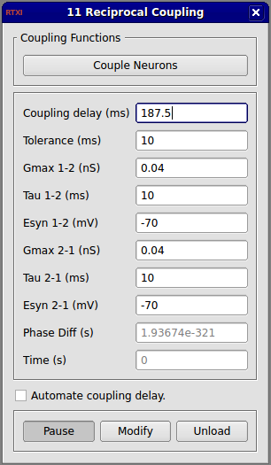

Requirements: None
Limitations: None

This module reciprocally couples two neurons with alpha synapses. It requires the membrane potential of both cells and the inputs from two spike detector modules (eg. Spike Detect). It outputs the two synaptic currents which must then be appropriately connected. This module can be used to couple two biological neurons or one biological neuron with a model neuron. To couple the neurons, the module should be unpaused, then the “Couple Neurons” toggle button can be activated/deactivated. This module also computes the difference in time between the spiking of both cells so that coupling can be activated programmatically based on the delay. To use this feature, the “Couple Neurons” toggle button should be deactivated. The checkbox to “Automate coupling delay” should be activated before unpausing the module. The difference in spike times between the two cells is continuously computed as Cell 2 – Cell 1. This can be plotted in the Oscilloscope to see how how this relationship changes over time.